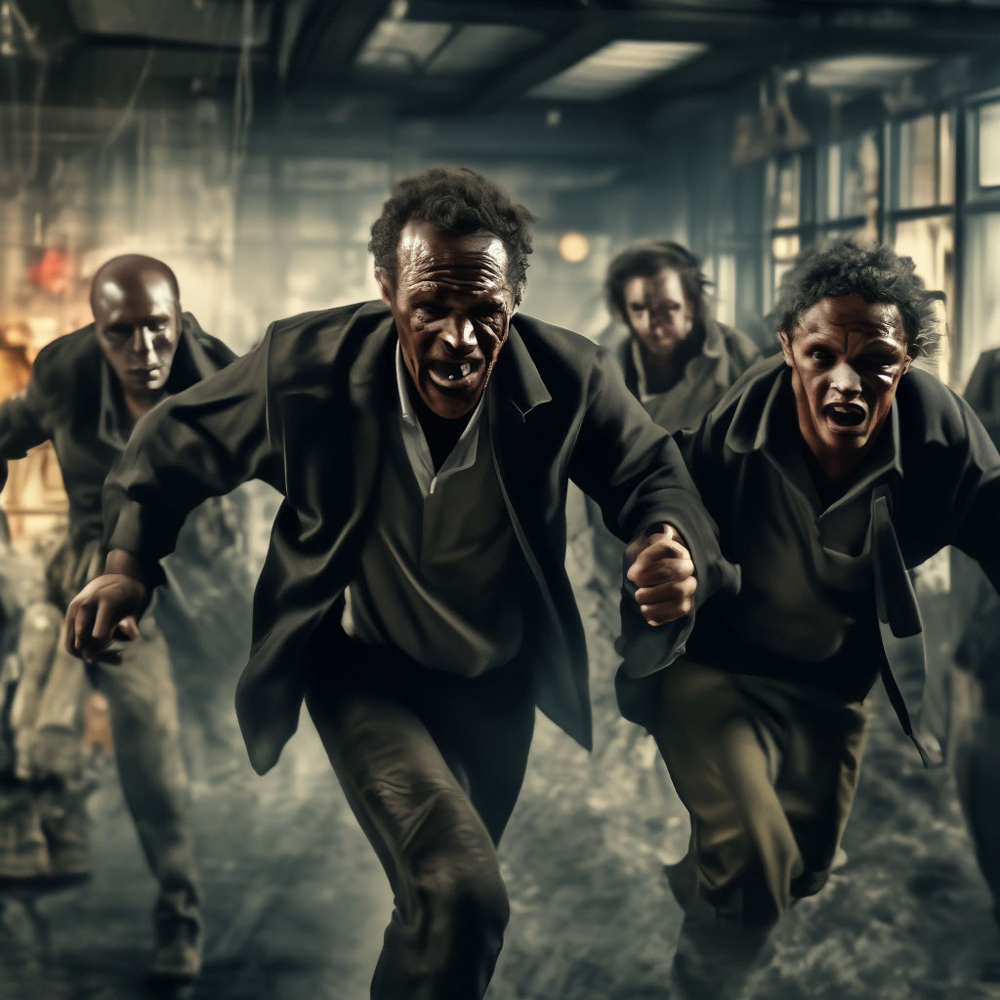

8. Хата, у якой немагчыма пераначаваць
Яны так і не змаглі паспаць. Нейкі дух, падобны да Зазоўкі іх ачмурыў і пачаў выводзіць на вуліцу, а пазадзі іх усё боль і гучней чулася лаханее, нейкія злыя смешкі “Хі-хі” та “Хі-хі” і пановай. Але ў нейкі момант яны ўсё ж прыйшлі ў сябе і ўпалі ў жах. Што тут адбываецца, што за хата пачвар, што за малпы тут бегаюць, што за смех. Яны хутка пабеглі ўнутар, каб знайсці сваю зброю, якую яны купілі, ці мабыць знайсці штосьці ў хаце, каб абараніцца і забраць свае рэчы, каб збегчы адсюль. А яшчэ я ў іх зрабаваў фотаздымак, на якім яны мяне ж і зафоталі “Хе-хе-хе”.

Наступны: 9. Гісторыі на сайце Беларускага філіялу
Ацэнка: 7.5/10
Філіял: Беларускі
Аўтар: Хведар Звычайны